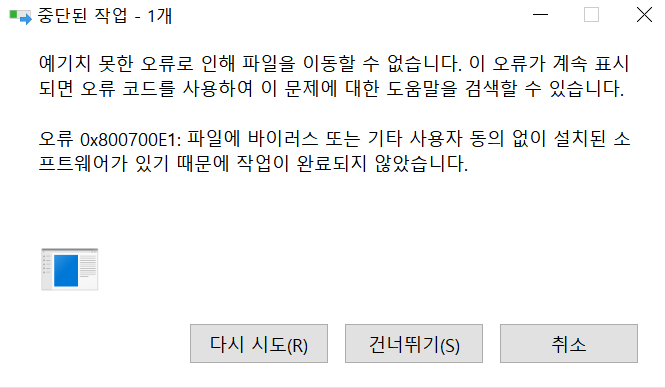
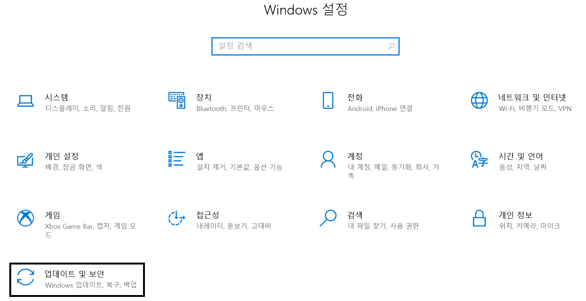
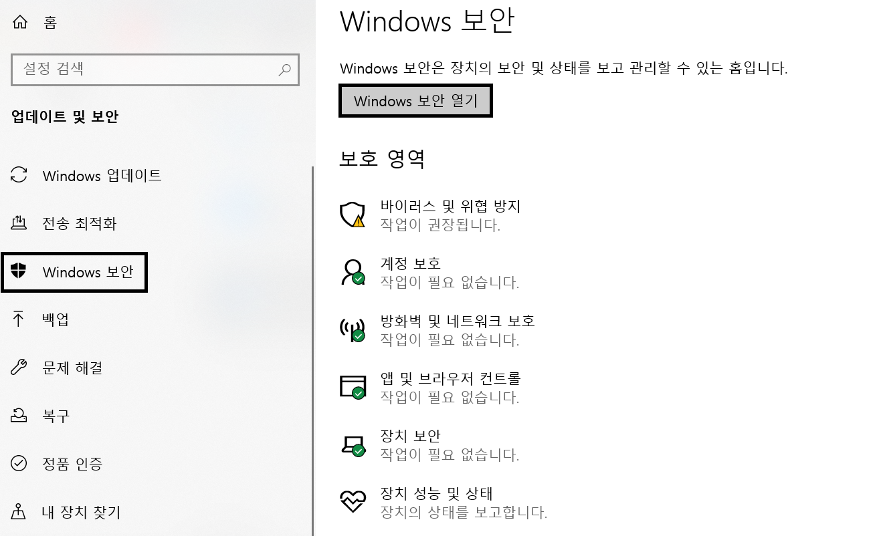
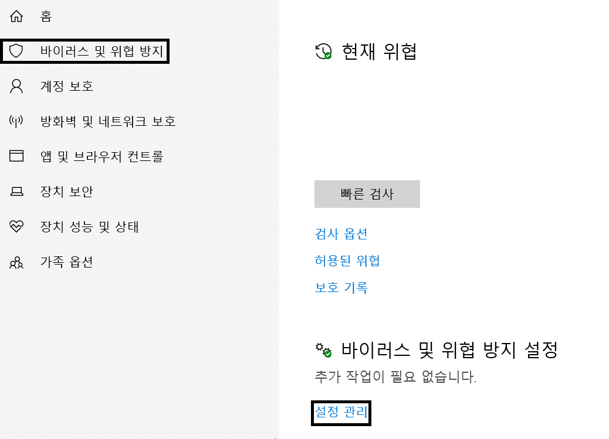
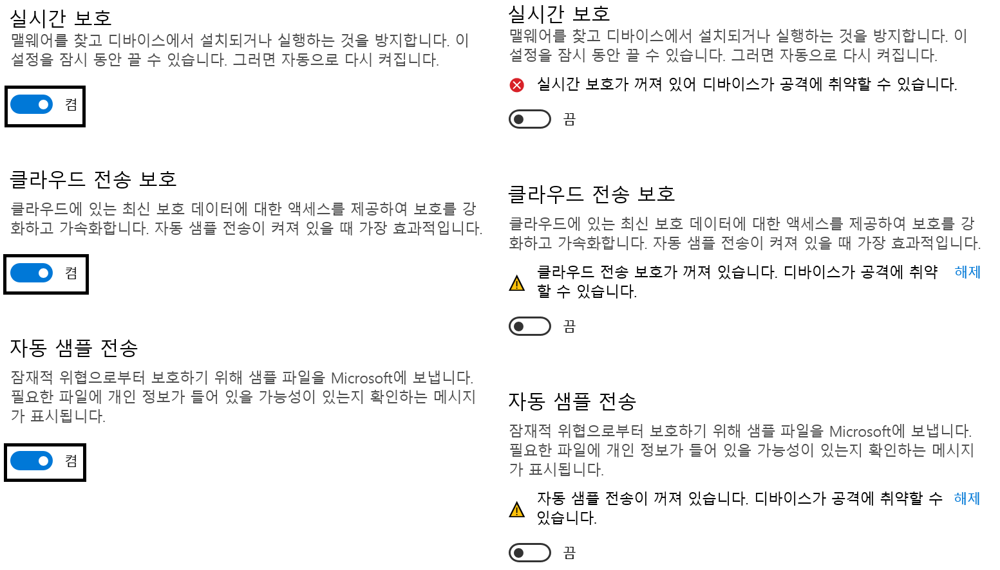

안녕하세요 nov입니다. 이번 포스팅에서는 0x800700E1 에러 팝업창 출력시 해결 방법에 대해 작성하고자 합니다.
사용자가 신뢰할 수 없는 출처로 부터 내려받은 파일을 실행 또는 경로를 이동하고자 할 때 발생하는 현상인데요,
사실 그냥 윈도우 방화벽만 꺼주시면 됩니다.

[윈도우 설정]으로 들어가신 뒤, [업데이트 및 보안]을 클릭해 줍니다.

좌측의 [Windows 보안] 으로 들어가신 뒤, [Windows 보안 열기] 를 클릭합니다.

[바이러스 및 위협 방지] 로 들어가시고, [바이러스 및 위협 방지 설정]의 [설정 관리] 를 클릭합니다.

실시간 보호 , 클라우드 전송 보호, 자동 샘플 전송 을 모두 끕니다.

여기까지 따라 오셨다면, 프로그램이 정상적으로 실행될 것입니다.